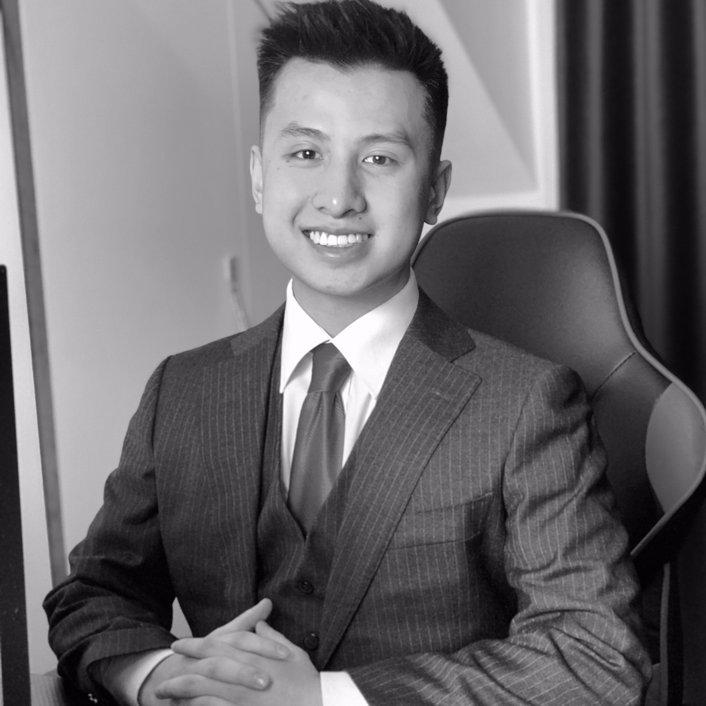

My Resume
Robert Nguyen

Summary
BSc Computer Science at the University of East Anglia with an ambition to develop competencies and skills not only in programming, but also in business, and with motivation to gain experience in the IT industry.
Education
- University of East Anglia - BSc Computer Science (09.2018 - 12.2022)
- International European School of Warsaw - International Baccalaureate (IB) (09.2016 - 05.2018)
Work Experience
- Admission & Student Experience Coordinator - SWISS IM&H (07.2020 - 04.2021)
- Managing database of students’ records (SQL) by organising their files in an
understandable and easy way to find by other staff members.
- Creating necessary documents and files taught me to always be up to-date with the
college's wants and needs and work in an AGILE/Scrum methodology
Key Skills
- Programming:
- Database and Java Frameworks:
- MySQL, DDL, CRUD, DAO, XML/JSON, JAXB/Jackson, JDBC/JPA/Hibernate/MyBatis, Maven
- Web Development:
- MVC, REST API, String Boot 3, Spring Core, Thymeleaf
- Testing:
- TestNG, Selenium, Zebrunner/Carina, Android Automation, Web Automation
- Other:
- OOP, AGILE/Scrum, GitHub, Docker, Bootstrap Studio, Jira, Testrail
- Soft Skills:
- Teamwork, Problem-solving, Communication, Leadership, Adaptability, Creativity
Other Skills
- Programming:
- Web Development:
- Django, Flask, HTML, CSS, JavaScript
- Other:
- PyGame, Microsoft Word, Microsoft Excel, Microsoft PowerPoint
Languages
- Polish: Native
- English: C1
- French: B1
- Vietnamese: B2
Other Experiences and Interests
- Treasurer at UEA Tae Kwon Do. Union Council Representative and Treasurer at UEA
International Students Society (ISS). Social Manager at UEA Polish Society.
- Leasure: Gym, Football, Piano, Guitar
- Apart from the activities previously mentioned, I also find enjoyment in creating websites
using platforms like Shopify, Bootstrap Studio.
Links